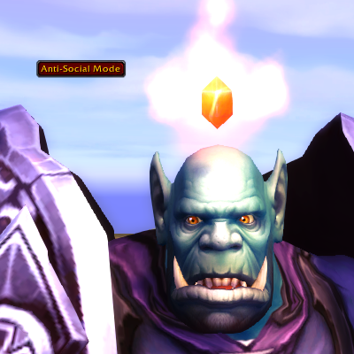
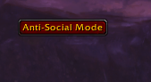
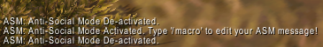
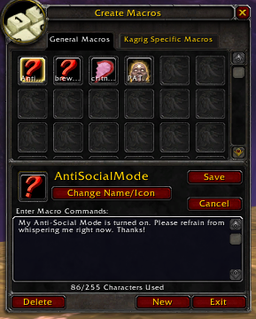
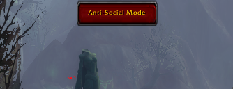
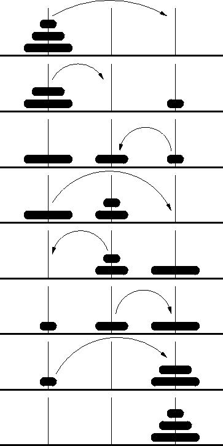
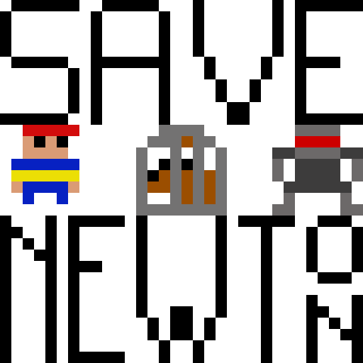

Portfolio
Personal Portfolio
Please feel free to browse the project I have worked on by clicking them on the left.
ANTI-SOCIAL MODE
Anti-Social Mode(ASM) is a World of Warcraft(WoW) addon that I develop on my down-time. You can read about ASM's features and usage and download ASM in the Twitch/Curse application, or by visiting this curseforge link.
You can also view my code for this project here.
Always In Development
While there is a finished release of Anti-Social Mode, I am always adding feature and polishing the addon up. This addon started as a way for me to practice using WoW lua and to begin to understand how WoW works behind the scenes, and as I learn more and brainstorm on how this addon's performance can better be executed, I add ideas and techniques to it.
Images
|   |    |
My Program for the Tower of Hanoi
|
The code for my C++ version. The code for my Javascript version.
Number of Rings:
Warning: This will generate 2^(n) - 1 steps of your input. I do not recommend attempting excessively large numbers on the web version |  |
Summary of the Tower
The Tower of Hanoi (also called the Tower of Brahma or Lucas' Tower and sometimes pluralized) is a mathematical game. It consists of three rods and a number of disks of different sizes, which can slide onto any rod. The puzzle starts with the disks in a neat stack in ascending order of size on one rod, the smallest at the top, thus making a conical shape.
The objective of the puzzle is to move the entire stack to another rod, obeying the following simple rules:
- Only one disk can be moved at a time.
- Each move consists of taking the upper disk from one of the stacks and placing it on top of another stack or on an empty rod.
- No disk may be placed on top of a smaller disk.
History of the Tower
The puzzle was invented by the French mathematician Edouard Lucas in 1883. There is a story about an Indian temple in Kashi Vishwanath which contains a large room with three time-worn posts in it, surrounded by 64 golden disks. Brahmin priests, acting out the command of an ancient prophecy, have been moving these disks in accordance with the immutable rules of Brahma since that time. The puzzle is therefore also known as the Tower of Brahma puzzle. According to the legend, when the last move of the puzzle is completed, the world will end.
There are many variations on this legend. For instance, in some tellings the temple is a monastery, and the priests are monks. The temple or monastery may be said to be in different parts of the world, including Hanoi, or Vietnam, and may be associated with any religion. In some versions other elements are introduced, such as the fact that the tower was created at the beginning of the world, or that the priests or monks may make only one move per day.
If the legend were true, and if the priests were able to move disks at a rate of one per second, using the smallest number of moves it would take them 2^(264) - 1 seconds or roughly 585 billion years to finish, which is about 42 times the current age of the Universe.
Fastest Solution for the Tower
The rules posted above in the Summary of the Tower section must always be followed. When you take a turn, while following the rules of the tower, it is referred to as a "Legal Move". This is a quick break down of the fastest solution to the tower:
For a game with an EVEN number of disks:
- Make a legal move between poles 1 and 2.
- Make a legal move between poles 1 and 3.
- Make a legal move between poles 2 and 3.
- Repeat
For a game with an ODD number of disks:
- Make a legal move between poles 1 and 3.
- Make a legal move between poles 1 and 2.
- Make a legal move between poles 2 and 3.
- Repeat
Name Generator!
This is a little name generator I made on a rainy Saturday. The names make me laugh, so it was worth-while. On my Github Page is both a C++ version and a JS version. Below is a demonstration of the JS version:
Name Appears Here |
|  | Can You Save Newton?!Save Newton is an Action Adventure game, with a twist of education! Battle your way through 5 chaotic levels as you help a young boy named Euclid resuce his dog, Newton! The catch is, the only way to battle the bad guys and save Netwon is to perform basic arithmetic! This game is targetted towards anyone who has ever felt like they needed to sharpen their addition, subtraction, division, or multiplication skills, but has a difficult time trying to do so in conventional means.You can play Save Newton! on itch.io, here!You can view my code for Save Newton! on Github, here! |
Speak Easy is a group project in which myself and 8 other students from Kent State's Software Engineering Fall 2018 course created a marketable project.Speak Easy allows users to create chat rooms by placing 'chat room nodes' at their current location on the planet. Users can then set their room pick-up radius to see rooms nearby. My specific role in this was Software Developer, and I did much of the work on the front end and the back end of the site. You can view my specific work for the site here. Check out our finished product here . See my personal tinkering here, only created and modified by me here. |